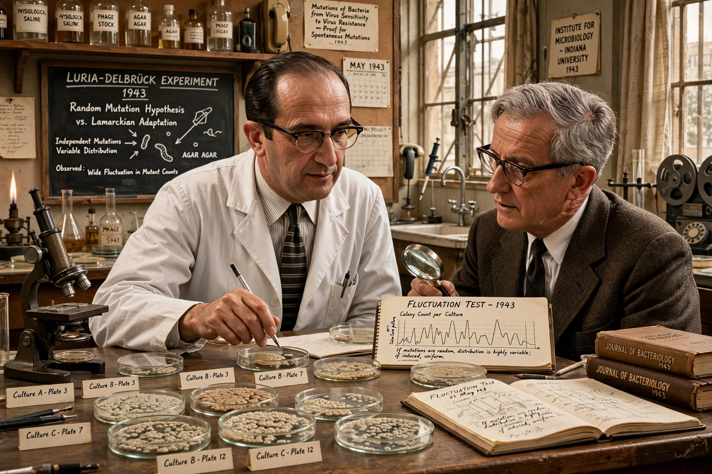

The Luria–Delbrück experiment (1943), also called the fluctuation test, demonstrated that in bacteria, genetic mutations arise in the absence of selective pressure rather than in response to it. It was performed by Salvador Luria and Max Delbrück.
Small bacterial cultures of E. coli were grown and then plated on medium containing bacteriophage. If resistance mutations were induced by exposure, the number of resistant colonies per plate should follow a Poisson distribution with similar counts. Instead counts varied wildly — 'jackpot' cultures with many resistant colonies indicated mutations had occurred early during growth, before exposure. The variance thus proved mutations are random and pre-existing, supporting Darwinian natural selection at the microbial level.
The experiment founded bacterial genetics and remains a method to estimate mutation rates. Luria and Delbrück later shared the 1969 Nobel Prize in Physiology or Medicine.